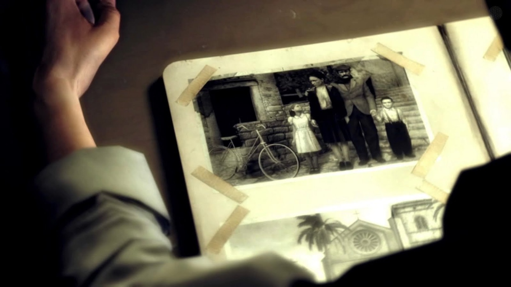

| 
|
Меня зовут Вито Скалетта. Я родился на Сицилии, в 25-м году. Это — наша
семья.
Стою с родителями и сестрой Франческой. Я мало что помню о тех временах, разве что жизнь была
тяжёлой, а потом отец решил, что нам пора уезжать. Пересечь океан и начать новую жизнь. Никогда
в
жизни я не видел ничего подобного Эмпайр-Бэй. Он был прекрасен. Впрочем, трудно представить
что-то
более скверное и отвратительное, чем наша новая конура. Американская мечта… Скорее уж кошмар.
Отец
стал работать в порту у человека, который перевёз нас сюда. Он работал как проклятый,
зарабатывал
гроши и почти всё спускал в кабаке. Со временем меня отдали в школу. Мне нужен был английский,
но
чёрта с два я бы заговорил на нём с итальянцами. Там я и встретил Джо. Постепенно мы стали
лучшими
друзьями. Так как у обоих свистело в кармане, а пристойной работы не было, мы затеяли своё
скромное
дело. Что ж, тогда нам не повезло. На дворе стоял 43-й год. Шла война. Высадка на Сицилии, нужны
были солдаты, говорящие на итальянском. Мне было 18, и в тюрьму я не хотел. Кто сказал, что
нельзя
вернуться на Родину?..
|